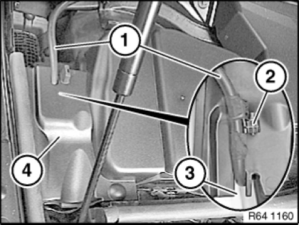
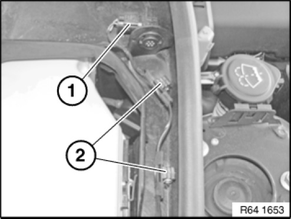
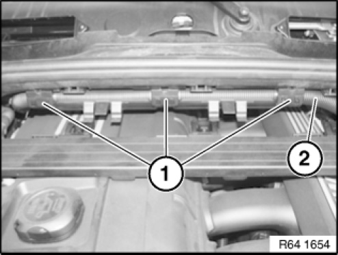
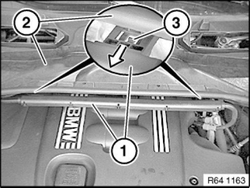
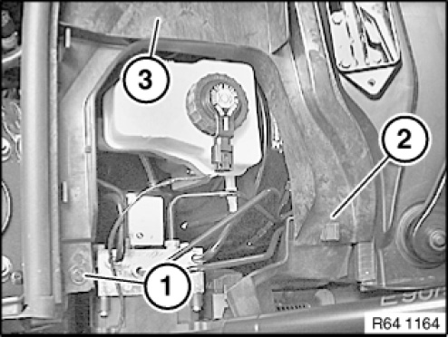

64 31 092 Removing and Installing/Replacing Microfilter Housing (Lower Section)
64 31 092 Removing and installing/replacing microfilter housing (lower section)

Necessary preliminary tasks:
- Remove upper section of microfilter housing

Release holder (1).
Release catches (3).
Remove right cover (2).
Installation note:
Make sure right cover (2) is correctly seated.

Left cover (4) is removed in same way as right cover.
Also for E90:
Release cable holder (2) and remove hose (1) from cover (4).
Installation note:
Make sure cable clip (2) and hose (1) are correctly seated in recess (3).

E8x
Unfasten plug connection (1) and disconnect.
Unclamp cable from guides (2).

Applies to: E81, E82, E87, E88:
Open hose clamps (2) on hose (1).

Except for: E84 / N20
Press retaining lugs (3).
Release cable strip (1) in direction of arrow from lower section of microfilter housing (2).
Installation note:
Retaining lugs (3) must not be damaged or missing.
Make sure cable strip is correctly seated.

Release holder (2) on both sides.
Release screw (1) on both sides on lower section of microfilter housing (3).

Feed out microfilter housing lower section (1) in direction of arrow and remove.
Installation note:
Make sure microfilter housing lower section (1) is correctly seated.

Installation note:
Seal (2) of microfilter housing lower section (1) must not be damaged or missing.